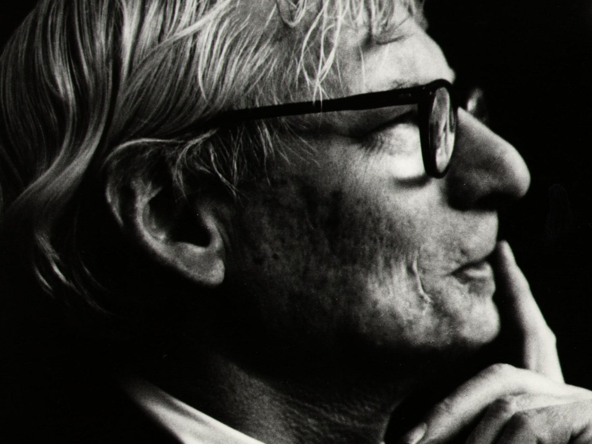
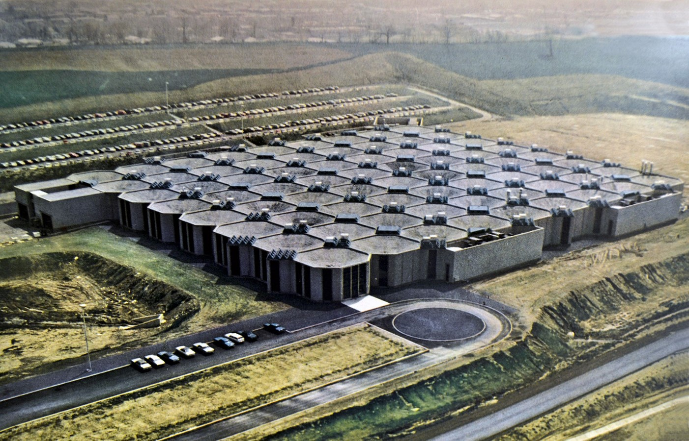

Louis Kahn
Architect
Born: 1901 Kuressaare. Estonia
Passed: 1974 New York, NY
Passed: 1974 New York, NY

The balance between work and life is a struggle felt by all in the modern world. We’re sold narratives of genius and relentless dedication leading to “success,” held up as shining examples of how to live. But here’s the rub: being human means that life has a knack for imposing its own sense of balance, often in ways we don’t anticipate. After peeling back the layers on the lives of the Henry Fords and Steve Jobses of the world, we’re left contemplating—was the juice worth the squeeze? Did their contributions to society justify the personal sacrifices they made—or compelled others to make? Was it the work of a well intentioned martyr, or a narcissistic manipulative tyrant?
Louis Kahn stands as a towering figure in modern architecture, a luminary whose innovative works have left an indelible imprint on the architectural landscape. Born in Estonia in 1901 before immigrating to the United States, Kahn’s prolific career spanned several decades of relentless creativity. He didn’t just embrace the principles of modernism and geometric purity; he seamlessly fused them with a profound understanding of how space can profoundly affect the human experience. With a masterful command of light and materiality, his work reflects a meticulous attention to detail and an unwavering commitment to the emotive power of architecture. In a world that often reduces buildings to mere utility, Kahn elevated them to places of introspection and awe, reminding us that architecture isn’t just about structures—it’s about shaping the very way we interact with the world around us.

The Salk Institute in La Jolla, California, stands as perhaps the most compelling testament to Kahn’s ability to harmonize monumental scale with a nuanced sensitivity to light and shadow. A building that promotes a dialogue between the human senses and the built environment. The way the structures frame the Pacific horizon engages you in a conversation that’s both intimate and expansive. There’s an almost spiritual quality to the space; you can’t help but feel that it’s designed to evoke reverence—and it does. The interplay of light cascading over concrete surfaces creates moments of reflection. It's not just for Kahn to showcase his architectural prowess; he elevates the very experience of inhabiting space, reminding us that architecture at its best can touch the soul.
The Salk Institute. © Leonid Furmansky
Our personal favorite among Kahn’s designs is the Yale University Art Gallery. There’s a reason the white-box gallery has become the norm: it allows the art inside to take center stage without any distractions. Simple enough. But from an architectural standpoint, it’s incredibly challenging to impart your own design ethos without conflicting with the artwork or, worse, overshadowing it entirely. Even successful examples like the Guggenheim have their issues—awkward side rooms and winding pathways that leave visitors bumping into each other like confused NPCs.
While Frank Lloyd Wright guides you along a single, predetermined path, Kahn creates a sense of progression and discovery. He interconnects galleries with varying ceiling heights and lighting elements, crafting a dynamic journey through the space that encourages exploration from multiple perspectives. His strategic use of large expanses of glass, skylights, and his iconic light slots not only makes the environment well-lit but also contributes to a serene and contemplative atmosphere ideal for viewing art. Combine that with his choice of wood and concrete, which add texture and create a sense of permanence to the site. Like all good design, it can seem as if there’s no design at all—as if it was always there and meant to be this way. That’s the mark of a master, and Louis Kahn is undoubtedly one.
While Frank Lloyd Wright guides you along a single, predetermined path, Kahn creates a sense of progression and discovery. He interconnects galleries with varying ceiling heights and lighting elements, crafting a dynamic journey through the space that encourages exploration from multiple perspectives. His strategic use of large expanses of glass, skylights, and his iconic light slots not only makes the environment well-lit but also contributes to a serene and contemplative atmosphere ideal for viewing art. Combine that with his choice of wood and concrete, which add texture and create a sense of permanence to the site. Like all good design, it can seem as if there’s no design at all—as if it was always there and meant to be this way. That’s the mark of a master, and Louis Kahn is undoubtedly one.

The Yale Center for British Art © Thomas Nemeskeri

Louis Kahn, Civic Center Studies Perspective of Promenade © Estate of Louis I. Kahn


However, Louis Kahn’s relentless dedication to his architectural vision came at a significant personal cost—a story poignantly explored in the award-winning 2003 documentary My Architect, created by his son Nathaniel. His son whom he had never met. You would think that his prowess and indisputable portfolio would have led to financial success, but a myriad of difficulties prevented him from this luxury. His designs were known for their ambition and attention to detail, but this often led to construction delays and cost overruns on projects. It resulted in him taking chances on financially risky projects that would sometimes never materialize. This resulted in unpaid debts to contractors, suppliers, and even his own employees. All of it damaging his reputation in the architecture community.
He may have been able to overcome these obstacles had he been pragmatic and strategic. Instead, he maintained a lavish lifestyle, frequently flying first-class around the world to seek inspiration and entertain clients, all while paying little attention to his finances. Some of these travels were to visit his three separate families—a complex personal life resulting from extramarital affairs. Yet despite these relationships, he was often perceived as aloof and emotionally distant, his singular focus on architecture leading him to neglect personal and familial connections.
He passed on alone and bankrupt in Penn Station in 1974.
Louis Kahn’s life, in many ways, reads like one of his own architectural blueprints—complex, full of hidden passages, and open to interpretation. His buildings stand as monuments to human aspiration, spaces where light and material converge to evoke something almost transcendent. Yet the man himself was a study in contradictions: a visionary who couldn’t manage his own finances, a family man with multiple families kept at arm’s length, an artist whose relentless pursuit of perfection often came at the expense of practicality and personal relationships. So we’re left to ponder: is the legacy of genius worth the collateral damage it so often leaves in its wake?
He may have been able to overcome these obstacles had he been pragmatic and strategic. Instead, he maintained a lavish lifestyle, frequently flying first-class around the world to seek inspiration and entertain clients, all while paying little attention to his finances. Some of these travels were to visit his three separate families—a complex personal life resulting from extramarital affairs. Yet despite these relationships, he was often perceived as aloof and emotionally distant, his singular focus on architecture leading him to neglect personal and familial connections.
He passed on alone and bankrupt in Penn Station in 1974.
Louis Kahn’s life, in many ways, reads like one of his own architectural blueprints—complex, full of hidden passages, and open to interpretation. His buildings stand as monuments to human aspiration, spaces where light and material converge to evoke something almost transcendent. Yet the man himself was a study in contradictions: a visionary who couldn’t manage his own finances, a family man with multiple families kept at arm’s length, an artist whose relentless pursuit of perfection often came at the expense of practicality and personal relationships. So we’re left to ponder: is the legacy of genius worth the collateral damage it so often leaves in its wake?


Esherick House, 1961

Kahn Korman House, Pennsylvania, 1971 © Cemal Emden
It’s tempting to idealize figures like Kahn, to let the grandeur of their accomplishments overshadow the messiness of their lives. But perhaps the more honest—and ultimately more rewarding—approach is to embrace the whole picture. To acknowledge that behind the awe-inspiring facades and carefully orchestrated spaces was a man as flawed and human as any of us. In doing so, we might find not just appreciation for his work, but also a deeper understanding of the sacrifices and contradictions inherent in the pursuit of greatness.
And maybe that’s the real lesson here: that the edifices we build, whether of stone or ambition, are only part of the story. The rest is lived in the shadows and light between them, in the spaces where human imperfection meets the striving for something more. Louis Kahn knew how to capture that interplay in his architecture. Perhaps it’s time we recognize it in his life as well.


Ezra Stoller, Olivetti-Underwood Factory, 1969


More Work


.jpg?1463425179)